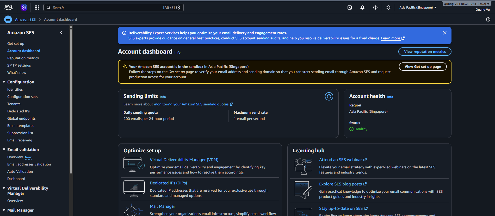

Giám sát, kiểm toán và gửi email
Thực hành giám sát, kiểm toán và gửi email
Tổng quan
- Phần này giải thích cách operator quan sát nền tảng đang chạy, kiểm toán hoạt động AWS và xác minh luồng gửi email outbound.
- Nội dung tập trung vào Amazon CloudWatch, AWS CloudTrail, Amazon SES và các bản ghi DNS email trong Route 53.
- Đây là phần nên dùng khi nhóm cần soi log, truy vết hành động vận hành hoặc kiểm tra đường gửi mail của ứng dụng.
Các dịch vụ AWS trong phần này
Amazon CloudWatch

- Lưu trữ log và metric của hệ thống đang chạy.
- Hỗ trợ monitoring, alert và debug hệ thống.
AWS CloudTrail

- Ghi lại toàn bộ hoạt động API trong AWS.
- Phục vụ audit, bảo mật và compliance.
Amazon SES

- Gửi email từ ứng dụng (notification, verify, v.v.).
- Cần cấu hình domain và DNS hợp lệ.
DNS trong Route 53 (cho SES)

- Cung cấp bản ghi DNS để xác thực domain và gửi email.
- Bao gồm DKIM, SPF, MX phục vụ SES.
IAM Role gắn với EC2
- Cấp quyền cho EC2:
- Ghi log lên CloudWatch
- Gửi email qua SES
- Không cần hardcode credential trong code.
Vì sao thiết kế này dùng tích hợp AWS trực tiếp
- Sơ đồ hiển thị trực tiếp CloudWatch và CloudTrail, nên observability được xây dựng trên bộ công cụ native của AWS.
- Email được gửi trực tiếp qua Amazon SES thay vì qua một dịch vụ messaging hay event bus riêng.
- EventBridge, SQS và SNS không xuất hiện trong kiến trúc, nên workshop này không giả định có pipeline notification theo kiểu event-driven.
Luồng AWS từng bước
- Ứng dụng phát sinh log và metric runtime. Dịch vụ: Amazon CloudWatch. Điều xảy ra: Tín hiệu vận hành và log của ứng dụng được ghi vào log group và metric của CloudWatch. Tại sao quan trọng: Log và metric là nơi đầu tiên cần kiểm tra khi xuất hiện lỗi phía người dùng.
- Operator kiểm tra log đang chạy. Dịch vụ: Amazon CloudWatch Logs. Điều xảy ra: Nhóm vận hành tail log hoặc truy vấn log stream để tìm lỗi và vấn đề timing. Tại sao quan trọng: Chẩn đoán nhanh phụ thuộc vào việc mở đúng log group càng sớm càng tốt.
- Hoạt động control-plane của AWS được ghi nhận. Dịch vụ: AWS CloudTrail. Điều xảy ra: Các hành động như mở phiên SSM hay thay đổi hạ tầng được lưu thành audit event. Tại sao quan trọng: Nhóm có thể biết ai đã thay đổi điều gì và vào thời điểm nào.
- Ứng dụng gửi email qua SES. Dịch vụ: Amazon SES. Điều xảy ra: Workload trên EC2 gọi SES API bằng IAM role của chính instance. Tại sao quan trọng: Hệ thống có thể gửi notification, OTP hoặc mail vận hành mà không cần tự quản lý SMTP server.
- SES phụ thuộc vào bản ghi DNS trong Route 53. Dịch vụ: Amazon SES và Route 53. Điều xảy ra: Bản ghi xác thực domain, DKIM và mail routing được xuất bản trong hosted zone. Tại sao quan trọng: Nếu DNS record không đúng, SES sẽ không verify identity hoặc không đạt deliverability như mong đợi.
AWS CLI Walkthrough
1. Tail log ứng dụng gần đây
aws logs tail ${LOG_GROUP} \
--since 30m \
--follow \
--region ${AWS_REGION}
2. Tra cứu audit event gần đây
aws cloudtrail lookup-events \
--lookup-attributes AttributeKey=EventName,AttributeValue=StartSession \
--max-results 10 \
--region ${AWS_REGION}
3. Kiểm tra trạng thái SES identity
aws sesv2 get-email-identity \
--email-identity ${SES_IDENTITY} \
--region ${AWS_REGION}
4. Gửi một email kiểm tra qua SES
Tạo file ses-test-email.json:
{
"FromEmailAddress": "no-reply@example.com",
"Destination": {
"ToAddresses": ["ops@example.com"]
},
"Content": {
"Simple": {
"Subject": {
"Data": "EV platform test email"
},
"Body": {
"Text": {
"Data": "If you received this message, SES delivery is working."
}
}
}
}
}
Gửi email:
aws sesv2 send-email \
--cli-input-json file://ses-test-email.json \
--region ${AWS_REGION}
5. Tạo một CPU alarm đơn giản cho backend instance
aws cloudwatch put-metric-alarm \
--alarm-name ev-app-instance-high-cpu \
--metric-name CPUUtilization \
--namespace AWS/EC2 \
--statistic Average \
--period 300 \
--threshold 80 \
--comparison-operator GreaterThanThreshold \
--dimensions Name=InstanceId,Value=${INSTANCE_ID} \
--evaluation-periods 2 \
--region ${AWS_REGION}
Ví dụ cấu hình
Ví dụ các bản ghi Route 53 cho thiết lập SES domain
Tạo file ses-identity-records.json:
{
"Comment": "SES identity verification records",
"Changes": [
{
"Action": "UPSERT",
"ResourceRecordSet": {
"Name": "example.com",
"Type": "TXT",
"TTL": 300,
"ResourceRecords": [
{
"Value": "\"amazonses:verification-token\""
}
]
}
},
{
"Action": "UPSERT",
"ResourceRecordSet": {
"Name": "selector1._domainkey.example.com",
"Type": "CNAME",
"TTL": 300,
"ResourceRecords": [
{
"Value": "selector1-example-com.dkim.amazonses.com"
}
]
}
},
{
"Action": "UPSERT",
"ResourceRecordSet": {
"Name": "mail.example.com",
"Type": "MX",
"TTL": 300,
"ResourceRecords": [
{
"Value": "10 inbound-smtp.ap-southeast-1.amazonaws.com"
}
]
}
}
]
}
Áp dụng các bản ghi DNS:
aws route53 change-resource-record-sets \
--hosted-zone-id ${HOSTED_ZONE_ID} \
--change-batch file://ses-identity-records.json
Những gì cần xác minh
- Log của ứng dụng đã vào đúng CloudWatch log group.
- CloudTrail ghi lại hành động của admin và các thay đổi hạ tầng.
- SES identity đã verify trước khi ứng dụng thử gửi mail.
- Route 53 có đủ TXT, CNAME và MX record mà cấu hình SES yêu cầu.
- CloudWatch alarm đã tồn tại cho những tín hiệu mà nhóm vận hành quan tâm.
Lỗi thường gặp
- Gửi email trước khi verify SES identity.
- Chỉ xem application log mà bỏ qua CloudTrail khi nguyên nhân thực chất là thao tác của operator.
- Tạo alarm nhưng không xác định rõ ai sẽ theo dõi và phản hồi.
- Kỳ vọng luồng notification theo EventBridge hoặc SQS trong khi kiến trúc hiện tại chỉ thể hiện tích hợp SES trực tiếp.
Ghi chú / Giả định
- Sơ đồ không cho thấy dashboard, tracing hay alarm action chi tiết.
- Ví dụ alarm cố ý không gắn SNS vì SNS không nằm trong phần kiến trúc đang được thể hiện.
- Các use case email như OTP hoặc notification được suy ra từ việc có SES, nhưng template cụ thể không xuất hiện trong sơ đồ.